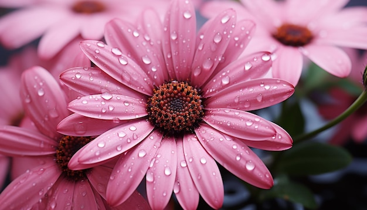
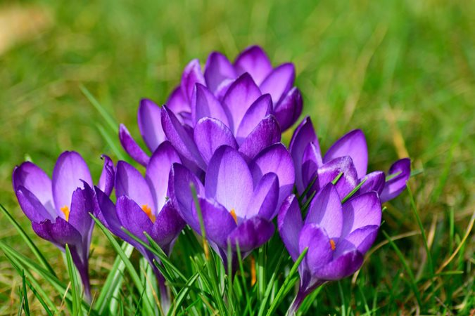
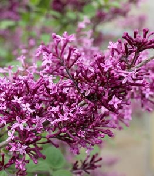
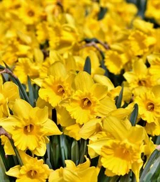
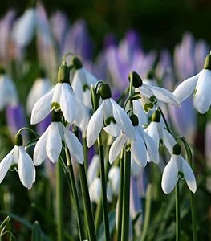
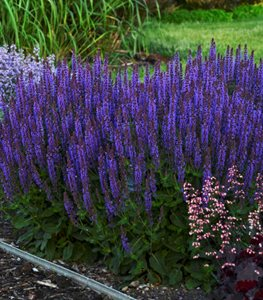

Flowers are introduced as the reproductive part of a plant. They are not only involved in reproduction but are also a source of food for other living organisms. They are a rich source of nectar.
|  |
Flowers are symbolic of beauty, love and tranquillity. They form the soul of a garden and convey the message of nature to man. Flowers and objects of aesthetic, ornamental, social, religious and cultural value. They are used for conveying love, happiness, grief, mourning etc.
|  |  |  |
A flower is the bloom or blossom of a plant. The flower is the part of a plant that produces seeds, which in time become other flowers. This is thanks to a process called pollination that is carried out either by insects or the wind. Every type of flower is different, in colour, smell, shape and size.
|  | Snowdrops prefer cooler climates and light shade and defy the cold by pushing their white flowers up through a blanket of snow. Their short stature makes them the perfect choice for woodland or rock gardens and borders. For the best massing effect,plant snowdrops in clusters of at least 25 bulbs, spacing them about 3 inches apart. |
| A dependable and easy flower to grow, daffodils require very little care and are a great choice for beginning gardeners. Their trumpet-shaped flowers are typically yellow or white and they grow best in full sun or light shade. For best results, plant in masses in a perennial garden, or let them naturalize in a woodland garden. | |
| An old-time standard of homesteads and cottage-style gardens, he small fragrant flower panicles of lilac occur in clusters, with shades of white, purple, pink, blue, or yellow. This reliable shrub is exceptionally hardy, low maintenance, and long-lived.t | |
|  | Salvia is a large genus of annuals and perennials that includes varieties that bloom in mid to late spring. This mint relative produces aromatic foliage and long-lasting flowers that come in a range of colors and shapes. Plants are easy-care, drought tolerant, and low maintenance |
Multiple studies show that proximity to plants has profound health benefits for human beings. We all know that a bouquet of flowers can convey appreciation, but research finds that simply being around flowers also reduces stress, speeds healing, enhances concentration, and improves mood